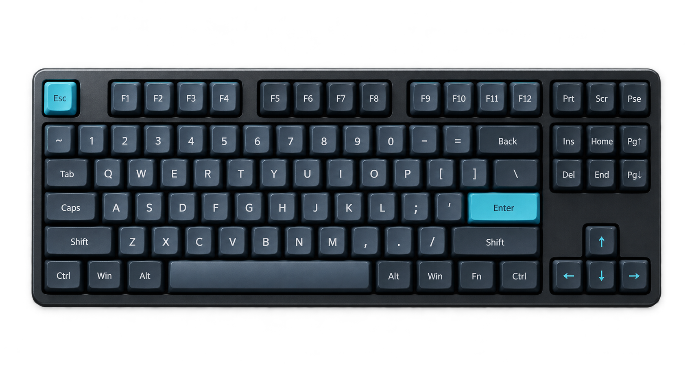
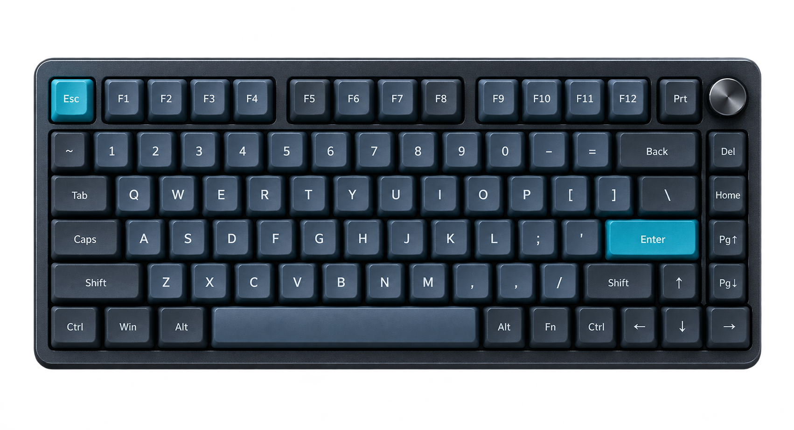

<!doctype html>
<html lang="th">
<head>
  <meta charset="utf-8">
  <meta name="viewport" content="width=device-width, initial-scale=1">
  <title>001 Keyboard Layout — Visual Cut v1</title>
  <link rel="stylesheet" href="../../tokens.css">
  <style>
    /* Hallmark · macrostructure: Narrative Workflow · tone: calm technical · theme: studied-DNA (source: approved draft) */
    * { box-sizing: border-box; }
    html, body { margin: 0; min-height: 100%; overflow-x: clip; background: var(--color-paper-muted); color: var(--color-ink); }
    body { font-family: var(--font-body); }
    main { width: min(100%, 1920px); margin: 0 auto; }
    .scene {
      position: relative;
      width: 1920px;
      height: 1080px;
      overflow: hidden;
      background: var(--color-paper);
      isolation: isolate;
    }
    .scene::before {
      content: "";
      position: absolute;
      inset: var(--space-8);
      border: var(--rule-thin) solid var(--color-rule);
      pointer-events: none;
    }
    .scene-grid {
      display: grid;
      grid-template-columns: minmax(0, 0.82fr) minmax(0, 1.18fr);
      gap: var(--space-20);
      align-items: center;
      height: 100%;
      padding: var(--space-24) var(--space-32) var(--space-24);
    }
    .scene.reverse .copy { order: 2; }
    .scene.reverse .visual { order: 1; }
    .scene.focus .scene-grid { grid-template-columns: minmax(0, 1fr); text-align: center; }
    .scene.focus .copy { width: 76%; margin: 0 auto; }
    .scene.focus .visual { position: absolute; inset: auto var(--space-32) var(--space-20); opacity: 0.34; z-index: -1; }
    .copy { align-self: center; max-width: 740px; }
    .kicker {
      margin: 0 0 var(--space-8);
      color: var(--color-accent-strong);
      font-family: var(--font-mono);
      font-size: var(--text-xs);
      font-weight: 600;
      letter-spacing: 0.12em;
      text-transform: uppercase;
    }
    h1 { min-width: 0; margin: 0; overflow-wrap: anywhere; font-size: var(--text-hero); line-height: 1.04; letter-spacing: -0.045em; font-weight: 700; }
    h1 .accent { color: var(--color-accent); }
    .support { margin: var(--space-8) 0 0; max-width: 58ch; color: var(--color-body); font-size: var(--text-md); line-height: 1.52; }
    .focus .support { margin-inline: auto; }
    .micro { margin-top: var(--space-10); color: var(--color-muted); font-family: var(--font-mono); font-size: var(--text-xs); line-height: 1.5; }
    .visual { min-width: 0; }
    .product {
      position: relative;
      min-height: 600px;
      display: grid;
      place-items: center;
    }
    .product img {
      width: 100%;
      max-height: 620px;
      object-fit: contain;
      filter: drop-shadow(var(--shadow-object));
      transform: rotate(-2deg);
    }
    .reverse .product img { transform: rotate(2deg); }
    .annotation {
      position: absolute;
      display: flex;
      align-items: center;
      gap: var(--space-4);
      padding: var(--space-3) var(--space-5);
      background: var(--color-paper-raised);
      border-top: var(--rule-bold) solid var(--color-accent);
      box-shadow: var(--shadow-object);
      color: var(--color-body);
      font-size: var(--text-sm);
      font-weight: 600;
    }
    .annotation.top { top: var(--space-12); right: 0; }
    .annotation.bottom { bottom: var(--space-12); left: 0; }
    .keyboard-stack { display: grid; gap: var(--space-8); align-items: center; }
    .keyboard-shell {
      width: var(--keyboard-width, 100%);
      margin-inline: auto;
      padding: var(--space-5);
      border: var(--rule-thin) solid var(--color-rule);
      border-radius: var(--radius-lg);
      background: var(--color-paper-raised);
      box-shadow: var(--shadow-object);
      transform: rotate(var(--tilt, -1deg));
    }
    .key-row { display: grid; grid-auto-flow: column; grid-auto-columns: 1fr; gap: var(--space-2); margin-bottom: var(--space-2); }
    .key-row:last-child { margin-bottom: 0; }
    .key {
      height: 42px;
      border: var(--rule-thin) solid var(--color-rule);
      border-radius: var(--radius-sm);
      background: var(--color-key);
    }
    .key.mark { border-color: var(--color-accent); background: var(--color-accent-soft); }
    .key.void { opacity: 0.16; }
    .keyboard-label { display: flex; justify-content: space-between; margin: var(--space-4) var(--space-2) 0; color: var(--color-muted); font-family: var(--font-mono); font-size: var(--text-xs); }
    .pair { display: grid; grid-template-columns: minmax(0, 1fr) minmax(0, 1fr); gap: var(--space-8); align-items: center; }
    .metric {
      min-height: 520px;
      display: grid;
      align-content: center;
      gap: var(--space-6);
      padding: var(--space-16);
      border-left: var(--rule-bold) solid var(--color-accent);
      background: var(--color-paper-raised);
    }
    .metric strong { display: block; color: var(--color-accent-strong); font-family: var(--font-mono); font-size: var(--text-xl); line-height: 1; }
    .metric span { font-size: var(--text-md); color: var(--color-body); }
    .big-symbol { color: var(--color-accent); font-family: var(--font-mono); font-size: 360px; font-weight: 600; line-height: 0.8; text-align: center; }
    .question-card { display: grid; grid-template-columns: 150px 1fr; gap: var(--space-10); align-items: center; }
    .question-number { color: var(--color-accent); font-family: var(--font-mono); font-size: 160px; font-weight: 600; line-height: 1; }
    .answer-path { display: grid; gap: var(--space-4); }
    .answer {
      display: grid;
      grid-template-columns: auto 1fr;
      gap: var(--space-5);
      align-items: center;
      padding: var(--space-5) 0;
      border-bottom: var(--rule-thin) solid var(--color-rule);
      color: var(--color-body);
      font-size: var(--text-sm);
    }
    .answer b { color: var(--color-accent-strong); font-family: var(--font-mono); }
    .workflow { display: grid; grid-template-columns: repeat(3, minmax(0, 1fr)); gap: var(--space-6); }
    .workflow-step { min-height: 190px; padding: var(--space-8); border-top: var(--rule-bold) solid var(--color-accent); background: var(--color-paper-raised); }
    .workflow-step b { display: block; margin-bottom: var(--space-3); font-family: var(--font-mono); color: var(--color-accent-strong); }
    .workflow-step span { color: var(--color-body); font-size: var(--text-sm); line-height: 1.4; }
    .ladder { display: grid; gap: var(--space-4); }
    .ladder-row { display: grid; grid-template-columns: 150px 1fr 260px; gap: var(--space-6); align-items: center; }
    .ladder-row strong { color: var(--color-accent-strong); font-family: var(--font-mono); font-size: var(--text-md); }
    .ladder-line { height: var(--rule-bold); background: var(--color-accent); transform-origin: left; }
    .ladder-row span { color: var(--color-body); font-size: var(--text-sm); }
    .scene-meta {
      position: absolute;
      left: var(--space-16);
      right: var(--space-16);
      bottom: var(--space-10);
      display: grid;
      grid-template-columns: auto 1fr auto;
      gap: var(--space-6);
      align-items: center;
      font-family: var(--font-mono);
      font-size: var(--text-xs);
      color: var(--color-muted);
    }
    .progress-track { height: var(--rule-thin); background: var(--color-rule); }
    .progress-value { height: 100%; width: var(--progress); background: var(--color-accent); }
    .safe-note { position: absolute; top: var(--space-12); right: var(--space-16); font-family: var(--font-mono); font-size: var(--text-xs); color: var(--color-muted); }
    .scene[hidden] { display: none; }
    @media (prefers-reduced-motion: reduce) { *, *::before, *::after { transition-duration: var(--duration-fast); animation: none; } }
  </style>
</head>
<body>
  <main id="stage" aria-label="Keyboard layout visual cut v1"></main>
  <script>
    const scenes = [
      { chapter: 'OPEN', title: '<span class="accent">98%</span> เท่ากัน<br>ปุ่มไม่เท่ากัน', body: 'ชื่อกลุ่มเดียวกัน อาจหมายถึง 97, 98 หรือ 99 ปุ่ม', visual: 'compactPair', mode: 'focus' },
      { chapter: 'OPEN', title: 'อย่าดูแค่<br><span class="accent">เปอร์เซ็นต์</span>', body: 'มันคือชื่อกลุ่มโดยประมาณ ไม่ใช่มาตรฐานตายตัว', visual: 'percent', reverse: true },
      { chapter: 'MAP', title: 'เริ่มจากปุ่มที่<br><span class="accent">เราใช้จริง</span>', body: 'Layout ที่เหมาะ เริ่มจาก workflow ไม่ได้เริ่มจากชื่อรุ่น', visual: 'fadeKeys' },
      { chapter: 'MAP', title: 'มองเป็น<br><span class="accent">5 กลุ่มปุ่ม</span>', body: 'Core · F-row · Navigation · Arrows · Numpad', visual: 'groups', reverse: true },
      { chapter: '100%', title: 'Full-size คือ<br><span class="accent">แผนที่ตั้งต้น</span>', body: 'ทุกกลุ่มอยู่ครบ และมีระยะห่างให้หาได้ด้วย muscle memory', visual: 'full' },
      { chapter: '100%', title: 'ปุ่มครบ<br><span class="accent">แลกกับพื้นที่</span>', body: 'ตัวอย่าง 104 ปุ่ม · กว้างประมาณ 435 มม.', visual: 'widthFull', reverse: true },
      { chapter: '96/98', title: 'เก็บ Numpad<br><span class="accent">บีบช่องว่าง</span>', body: '96/98/1800 ลดระยะระหว่างกลุ่ม แต่ยังเก็บตัวเลขไว้', visual: 'compact' },
      { chapter: '96/98', title: 'ชื่อเหมือนกัน<br><span class="accent">ตำแหน่งต่างกัน</span>', body: 'ก่อนซื้อ ให้ดู physical layout ของรุ่นจริงเสมอ', visual: 'compactVariants', reverse: true },
      { chapter: 'TKL', title: 'ตัด Numpad<br><span class="accent">พื้นที่กลับมา</span>', body: 'TKL ยังคง F-row, Navigation และ Arrows แบบแยกกลุ่ม', visual: 'tklImage' },
      { chapter: 'TKL', title: 'คืนพื้นที่ราว<br><span class="accent">8 ซม.</span>', body: 'ตัวอย่าง 435 → 354 มม. เมาส์ขยับใกล้มือขึ้น', visual: 'widthTkl', reverse: true },
      { chapter: '75%', title: 'F-row อยู่<br><span class="accent">Arrows อยู่</span>', body: '75% บีบกลุ่ม Navigation เข้าหาตัวอักษร', visual: 'seventyFiveImage' },
      { chapter: '75%', title: '<span class="accent">82 ปุ่ม</span><br>ไม่เท่ากับ 84', body: 'จำนวนและตำแหน่งปุ่มของ 75% ยังต่างกันได้', visual: 'countPair', reverse: true },
      { chapter: '65%', title: 'F-row ไป Layer<br><span class="accent">Arrows ยังอยู่</span>', body: '65% ลดความสูง แต่ยังรักษาปุ่มลูกศรแยกไว้', visual: 'sixtyFive' },
      { chapter: '65%', title: 'ต้นทุนของ Fn<br><span class="accent">ขึ้นกับงานเรา</span>', body: 'F5 · F10 · F11 · Home · End · Delete — ใช้บ่อยแค่ไหน?', visual: 'workflow', reverse: true },
      { chapter: '60%', title: 'เหลือแกนหลัก<br><span class="accent">ของการพิมพ์</span>', body: '60% ตัด dedicated arrows, Navigation และ F-row', visual: 'sixty' },
      { chapter: '60%', title: 'ปุ่มไม่หาย<br><span class="accent">แค่ย้ายชั้น</span>', body: 'ฟังก์ชันเดิมยังอยู่ แต่เราต้องจำ Fn combination', visual: 'layer', reverse: true },
      { chapter: 'TRADE-OFF', title: 'เล็กลง<br><span class="accent">ไม่แปลว่าเหมาะขึ้น</span>', body: 'พื้นที่ลดลง แต่ learning curve อาจเพิ่มขึ้น', visual: 'sizes', mode: 'focus' },
      { chapter: 'DECIDE', title: 'เราใช้ Numpad<br><span class="accent">บ่อยไหม?</span>', body: 'ตัวเลขทั้งวัน → เก็บไว้ · ใช้นาน ๆ ครั้ง → แยกภายนอกได้', visual: 'q1' },
      { chapter: 'DECIDE', title: 'ต้องกด F1–F12<br><span class="accent">ปุ่มเดียวไหม?</span>', body: 'Shortcut ต่อเนื่อง เหมาะกับ dedicated F-row มากกว่า', visual: 'q2', reverse: true },
      { chapter: 'DECIDE', title: 'Navigation ปุ่มไหน<br><span class="accent">ขาดไม่ได้?</span>', body: 'อย่าถามว่าใช้ Nav ไหม — ถามทีละปุ่ม', visual: 'q3' },
      { chapter: 'DECIDE', title: 'เรายอมใช้ Layer<br><span class="accent">แค่ไหน?</span>', body: 'ไม่อยากจำเพิ่ม → อยู่กับปุ่มจริง · ปรับได้ → ไปเล็กลง', visual: 'q4', reverse: true },
      { chapter: 'DECIDE', title: 'พื้นที่และการพก<br><span class="accent">สำคัญแค่ไหน?</span>', body: 'โต๊ะ, ระยะเมาส์ และน้ำหนัก คือส่วนหนึ่งของ layout', visual: 'q5' },
      { chapter: 'CHECK', title: 'ก่อนซื้อ<br><span class="accent">ดูรุ่นจริง</span>', body: 'ภาพ Layout · Keymap · Manual · จำนวนปุ่ม', visual: 'checklist', reverse: true },
      { chapter: 'RECAP', title: 'เลือกจาก<br><span class="accent">สิ่งที่เราต้องเก็บ</span>', body: 'ไม่มี layout ที่ดีที่สุด มีแต่ trade-off ที่เหมาะกับงานเรา', visual: 'ladder' },
      { chapter: 'END', title: 'เราใช้ Layout<br><span class="accent">อะไรอยู่?</span>', body: 'แล้วปุ่มไหนที่ขาดไม่ได้จริง ๆ', visual: 'end', mode: 'focus' }
    ];

    const rows = {
      full: [16, 18, 18, 17, 16, 12],
      compact: [15, 16, 16, 15, 15, 11],
      tkl: [16, 15, 15, 14, 13, 9],
      seventyFive: [15, 15, 15, 14, 13, 9],
      sixtyFive: [14, 14, 14, 13, 12],
      sixty: [14, 14, 14, 13, 11]
    };

    function keyboard(layout, label, mark = 'none', width = '100%', tilt = '-1deg') {
      const keyRows = rows[layout].map((count, rowIndex) => {
        const keys = Array.from({ length: count }, (_, keyIndex) => {
          const marked = mark === 'all' || (mark === 'right' && keyIndex > count - 4) || (mark === 'top' && rowIndex === 0) || (mark === 'arrows' && rowIndex > rows[layout].length - 3 && keyIndex > count - 4);
          const faded = mark === 'fade' && (rowIndex === 0 || keyIndex > count - 4);
          return `<span class="key${marked ? ' mark' : ''}${faded ? ' void' : ''}"></span>`;
        }).join('');
        return `<div class="key-row">${keys}</div>`;
      }).join('');
      return `<div class="keyboard-shell" style="--keyboard-width:${width};--tilt:${tilt}"><div>${keyRows}</div><div class="keyboard-label"><span>${label}</span><span>${layout}</span></div></div>`;
    }

    function question(number, yes, no) {
      return `<div class="question-card"><div class="question-number">0${number}</div><div class="answer-path"><div class="answer"><b>YES</b><span>${yes}</span></div><div class="answer"><b>NO</b><span>${no}</span></div></div></div>`;
    }

    function renderVisual(type) {
      const map = {
        compactPair: `<div class="pair">${keyboard('compact', '97 KEYS', 'right', '100%', '-2deg')}${keyboard('compact', '99 KEYS', 'right', '100%', '2deg')}</div>`,
        percent: `<div class="big-symbol">%</div>`,
        fadeKeys: keyboard('full', 'USE MAP', 'fade', '95%'),
        groups: keyboard('full', '5 KEY GROUPS', 'all', '100%', '1deg'),
        full: keyboard('full', 'FULL-SIZE / 100%', 'none', '100%'),
        widthFull: `<div class="metric"><strong>≈ 435 MM</strong><span>ตัวอย่าง Full-size 104 ปุ่ม</span>${keyboard('full', 'WIDTH', 'none', '100%')}</div>`,
        compact: keyboard('compact', '96 / 98 / 1800', 'right', '92%'),
        compactVariants: `<div class="keyboard-stack">${keyboard('compact', '97 KEYS', 'right', '82%', '-1deg')}${keyboard('compact', '98 KEYS', 'right', '90%', '1deg')}${keyboard('compact', '99 KEYS', 'right', '96%', '-1deg')}</div>`,
        tklImage: `<div class="product"><div class="annotation top">Numpad ถูกตัดออก</div><div class="annotation bottom">F-row + Navigation + Arrows ยังอยู่</div></div>`,
        widthTkl: `<div class="metric"><strong>435 → 354</strong><span>มิลลิเมตร · ตัวอย่าง ไม่ใช่มาตรฐานทั้งกลุ่ม</span>${keyboard('tkl', 'TKL', 'none', '82%')}</div>`,
        seventyFiveImage: `<div class="product"><div class="annotation top">F-row ยังอยู่</div><div class="annotation bottom">Navigation ถูกบีบเข้า</div></div>`,
        countPair: `<div class="pair"><div class="metric"><strong>82</strong><span>ปุ่ม</span></div><div class="metric"><strong>84</strong><span>ปุ่ม</span></div></div>`,
        sixtyFive: keyboard('sixtyFive', '65%', 'arrows', '82%'),
        workflow: `<div class="workflow"><div class="workflow-step"><b>CODE</b><span>F5 · F10 · F11</span></div><div class="workflow-step"><b>EDIT</b><span>Home · End · Delete</span></div><div class="workflow-step"><b>COUNT</b><span>กี่ครั้งต่อวัน?</span></div></div>`,
        sixty: keyboard('sixty', '60%', 'fade', '74%'),
        layer: `<div class="pair">${keyboard('sixty', 'BASE', 'none', '100%', '-2deg')}${keyboard('sixty', 'FN LAYER', 'all', '100%', '2deg')}</div>`,
        sizes: `<div class="keyboard-stack">${keyboard('full', '100% · 435 MM', 'none', '92%')}${keyboard('tkl', 'TKL · 354 MM', 'none', '74%')}${keyboard('sixtyFive', '65% · 313 MM', 'none', '64%')}${keyboard('sixty', '60% · 293 MM', 'none', '58%')}</div>`,
        q1: question(1, 'เก็บ 100% หรือ 96/98', 'เริ่มดู TKL ลงมา'),
        q2: question(2, 'เก็บ TKL หรือ 75%', 'ดู 65% หรือ 60%'),
        q3: `<div class="workflow"><div class="workflow-step"><b>HOME / END</b><span>แก้ข้อความ</span></div><div class="workflow-step"><b>PGUP / PGDN</b><span>อ่านเอกสาร</span></div><div class="workflow-step"><b>INS / DEL</b><span>workflow เฉพาะ</span></div></div>`,
        q4: question(4, 'ไป 65% / 60% ได้', 'อยู่ 75% ขึ้นไป'),
        q5: question(5, 'ให้ขนาดเป็นตัวตัดสิน', 'ให้ปุ่มจริงมาก่อน'),
        checklist: `<div class="workflow"><div class="workflow-step"><b>01</b><span>ภาพ Layout</span></div><div class="workflow-step"><b>02</b><span>Keymap</span></div><div class="workflow-step"><b>03</b><span>Manual</span></div><div class="workflow-step"><b>04</b><span>จำนวนปุ่ม</span></div></div>`,
        ladder: `<div class="ladder"><div class="ladder-row"><strong>100/98</strong><div class="ladder-line"></div><span>Numpad</span></div><div class="ladder-row"><strong>TKL</strong><div class="ladder-line" style="width:82%"></div><span>คุ้นมือ</span></div><div class="ladder-row"><strong>75%</strong><div class="ladder-line" style="width:72%"></div><span>F-row</span></div><div class="ladder-row"><strong>65%</strong><div class="ladder-line" style="width:62%"></div><span>Arrows</span></div><div class="ladder-row"><strong>60%</strong><div class="ladder-line" style="width:54%"></div><span>Layer</span></div></div>`,
        end: `<div class="pair">${keyboard('seventyFive', '75%', 'top', '100%', '-3deg')}${keyboard('tkl', 'TKL', 'right', '100%', '3deg')}</div>`
      };
      return map[type];
    }

    const stage = document.querySelector('#stage');
    const requested = Number.parseInt(new URLSearchParams(location.search).get('slide') || '0', 10);
    const active = Number.isFinite(requested) ? Math.min(Math.max(requested, 0), scenes.length - 1) : 0;
    stage.innerHTML = scenes.map((scene, index) => `
      <article class="scene ${scene.reverse ? 'reverse' : ''} ${scene.mode || ''}" ${index === active ? '' : 'hidden'}>
        <div class="safe-note">LAYOUT FIELD NOTES / 001</div>
        <div class="scene-grid">
          <section class="copy">
            <p class="kicker">${scene.chapter} · ${String(index + 1).padStart(2, '0')}</p>
            <h1>${scene.title}</h1>
            <p class="support">${scene.body}</p>
          </section>
          <section class="visual" aria-hidden="true">${renderVisual(scene.visual)}</section>
        </div>
        <footer class="scene-meta">
          <span>${String(index + 1).padStart(2, '0')} / ${scenes.length}</span>
          <div class="progress-track"><div class="progress-value" style="--progress:${((index + 1) / scenes.length) * 100}%"></div></div>
          <span>เลือกจากปุ่มที่เราใช้</span>
        </footer>
      </article>`).join('');
  </script>
</body>
</html>
